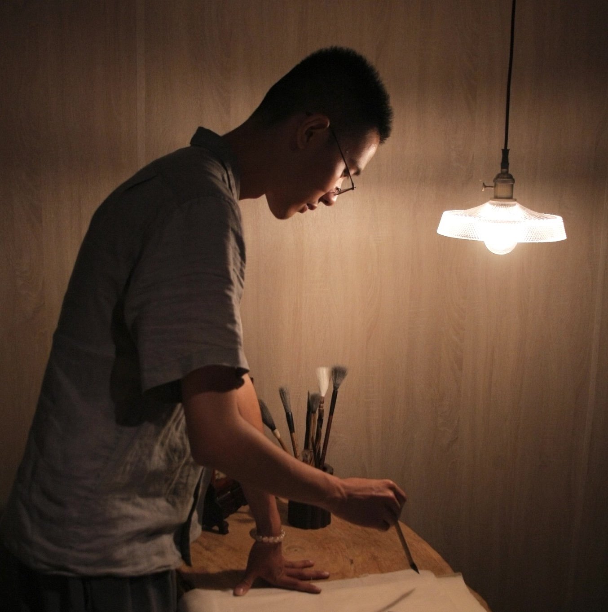

曾詠振 Yung-Cheng Tseng
1996 生於高雄
大學就讀書畫藝術學系，奠定書法、水墨、篆刻功底，學習東方藝術史與美學。亦接觸西方藝術史、美學與當代藝術創作、展覽。近年以書法創作為主軸，偶爾畫畫，亦著力於篆刻。
學經歷
- 2018 - 2021 任職於國立臺灣藝術大學有章藝術博物館
- 2017 - 2021 國立臺灣藝術大學美術學院多媒體工作坊
- 2015 - 2019 國立臺灣藝術大學書畫藝術學系
聯展
- 2023 時間的浮橋，蕙風堂宣紙圖書部展廳，臺北市
- 2023 一個象徵式的輕觸，臺灣藝術大學北側藝術聚落，新北市
- 2020 美術研究所評鑑展，臺灣藝術大學北側藝術聚落，新北市
- 2019 叢生，首屆兩岸藝術院校，中國美術學院象山中心校區，杭州
- 2019 限時動態—超領域國際展，臺灣藝術大學有章藝術博物館，新北市
- 2019 異質書寫，臺灣藝術大學日間部書畫系畢業展，國父紀念館逸仙畫廊，臺北市
- 2018 心木異托邦的藝術力，中心新村，台北市
- 2018 我在這，臺灣藝術大學，北側藝術聚落，新北市
- 2018 時時，臺灣藝術大學日間部書畫系班展，剝皮寮歷史街區，新北市
- 2018 人因風景，有章藝術博物館，新北市
- 2017 實到0空間進行式，臺灣藝術大學，新北市
- 2017 原創基地節青春曝光，松菸文創園區，臺北市
策展
- 2023 時間的浮橋，蕙風堂宣紙圖書部展廳，臺北市
- 2019 限時動態—超領域國際展，臺灣藝術大學有章藝術博物館，新北市（接待與協助藝術家 Gary Hill 執行作品現地製作，全英文討論與調整）
- 2019 異質書寫，臺灣藝術大學日間部書畫系畢業展，國父紀念館逸仙畫廊，臺北市
- 2018 心木異托邦的藝術力，中心新村，臺北市
- 2018 我在這，臺灣藝術大學北側藝術聚落，新北市
- 2018 時時，臺灣藝術大學日間部書畫系班展，剝皮寮歷史街區，新北市
- 2017 實到0空間進行式，臺灣藝術大學，新北市
獲獎
- 2025 新北市美展，一般組書法類入選
- 2025 南投縣玉山美術獎，書法篆刻類入選
- 2025 雲林文化藝術獎，書法類入選
- 2023 新北市美展，一般組書法類優選